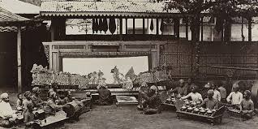
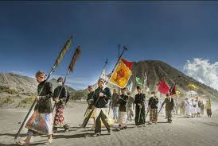
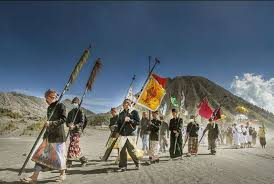

Sejarah Kebudayaan Jawa
Kebudayaan Jawa berakar dari kerajaan-kerajaan kuno seperti Mataram Kuno (abad ke-8 M) dan Majapahit (1293-1527 M). Dipengaruhi oleh Hindu-Buddha dari India, Islam dari Timur Tengah, dan tradisi lokal Austronesia. Candi Borobudur (dibangun sekitar 750-850 M) adalah bukti kejayaan arsitektur Buddha, sementara Prambanan (abad ke-9) menunjukkan pengaruh Hindu. Pada era kolonial Belanda (abad ke-19-20), kebudayaan ini bertahan melalui gerakan nasionalisme.
Periode Utama:
- Klasik (abad 8-15): Zaman kerajaan dengan seni pahat dan sastra seperti Kakawin Ramayana.
- Islam (abad 15-19): Penyebaran agama melalui Wali Songo, menghasilkan wayang kulit dan gamelan. 
- Modern (abad 20-sekarang): Revitalisasi melalui pendidikan dan pariwisata, seperti festival Yogyakarta.


 
